Making pictures & motion for Nawras
دَلِيلُ الرُّسُومِ وَالْحَرَكَةِFor any teacher, designer or agent adding a new lesson. Everything here comes from what we actually built: the prompts, seeds and redraws in book/source/gen-noori-shell.sh and assets/art/source/gen-art.sh, the tokens and keyframes in assets/kids.css, and the components in assets/kids.js. The buttons run the real code. Try another theme with the palette button (bottom-left).
Principles for kids’ art
مَبَادِئُGrade 1–2 children read the picture before the word. The picture must be friendly, simple and true to the sentence under it, and it must never carry the Arabic itself.
Shape
Round, chubby, simple shapes. Bold clean dark navy outlines. One subject in the middle with room around it. No clutter, no crowds, no photo-like texture.
Colour
Flat, bright colours, no gradients in stickers. Pictures use the San Diego palette: ocean teal, warm sand, sunset coral, sky blue. UI colour comes from theme tokens (--brand, --accent), never hard-coded.
Faces
Big kind round dark eyes with a white sparkle, rosy cheeks, a small smile. Never scary: scary, angry, sharp teeth are in every negative prompt. One expression per picture.
One character family
Noori, Sami and Salma look the same on every page because their descriptions are pasted, never retyped (section 2). New pictures reuse the book’s STYLE and NEG strings word for word.
No text inside images
The model cannot write: text comes out as nonsense, and Arabic is the worst. Every Arabic word is typeset in HTML in Naskh with full tashkeel. Ask for “a plain blank book”, “a completely plain cover”.
San Diego + Islamic, softened
Ocean, palms, mission arches, seagulls; 8-point stars, zellige, arches, lanterns, crescent and stars. All rounded and bright for kids. Islamic greetings are welcome: السَّلَامُ عَلَيْكُمْ.
Content rules: never break these
- No depictions of prophets or angels. Show what the story is about instead (a place, an object, the children).
- No Qur’an verses as decoration, inside games, on backgrounds or in generated images.
- Modest dress on every person: long sleeves, long trousers or a long dress, socks and shoes; girls and women in a headscarf that covers all the hair and neck. Negatives always carry
revealing clothing, bare shoulders, bare legs, shorts, swimsuit, bikini, sleeveless, short skirt. - No grown-ups in story pictures. The model mangles adult arms and hands. Grown-ups live in the words (the mother on the book’s “fence” page). Only the word pictures
teacher-m,teacher-f,mothershow adults, modest and kind. - Never in a picture: crosses, churches, steeples, temples, idols or statues, pigs, alcohol or bottles, musical instruments. Sound effects are soft tones only; we make no music.
- No look-alikes of famous characters. The book’s white cat with a pink bow was too close to a famous one, so she became a calico with a pink collar.
The characters
الشَّخْصِيَّاتُA local model has no memory of a character. It is held by words alone: one fixed description per character, kept as a shell variable and pasted into every prompt. These are the exact strings from book/source/gen-noori-shell.sh, copied verbatim into assets/art/source/gen-art.sh. Expression and pose go after the variable, never inside it.
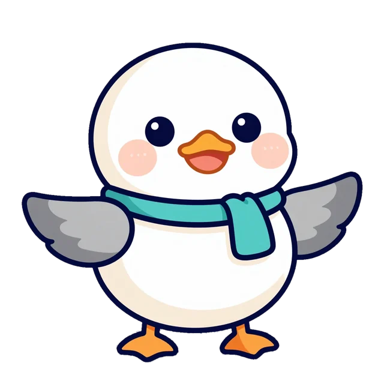
Generated ·noori/happy seed 1100KS.gull()نُورِي Noori mascot
A young seagull, from نُور (light). In every story picture, the logo, the stickers and the SVG.
NOORI="a cute round chubby cartoon baby seagull named Noori with a round white and cream body, a small orange beak, big kind round dark eyes with a white sparkle, rosy pink cheeks, soft grey wings with grey wing tips, small orange feet, and a tiny teal scarf around his neck"
- Repeat “his teal scarf clearly visible” when a pose could hide it (seed 611 dropped it).
- Spell out poses: “raises one wing and touches his chin with the wing tip”.
- Asleep: “both eyes fully closed drawn as two soft curved lines” +
open eyesin NEG.
- No text or letters on him, no kufi or hat.
- Never let him become
black bird, crow, duck, chicken, penguin, pelican, long neck(all in NEG). - Never retype or “simplify” the description.
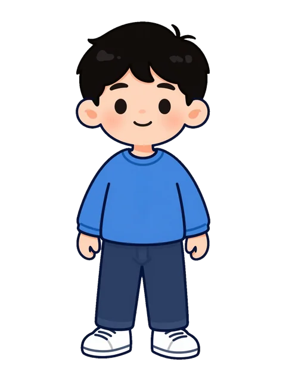
Generated ·pic/boy seed 1100سَامِي Sami هَذَا
Six years old. One fixed outfit, always the same.
SAMI="a cheerful six-year-old cartoon boy with short black curly hair, warm light-brown skin, round soft face, small thin eyebrows, wearing a long-sleeved blue t-shirt, long navy trousers and white sneakers"
- With Salma in the picture, add “with his short black curly hair uncovered” (seed 610 gave him a headscarf).
- Ask for “his blue t-shirt completely plain” (seed 1000 printed a little cat on it).
- Accepted drift to avoid next time: short sleeves on book page
nashit(613). - No new outfit: a new outfit is a new character to the model.
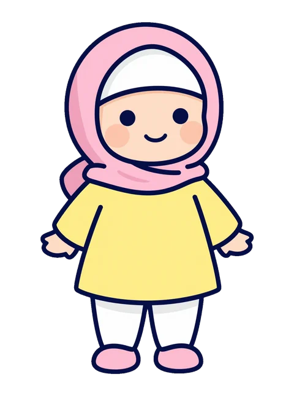
Generated ·pic/girl seed 1001سَلْمَى Salma هَذِهِ
Six years old. The trousers, socks and shoes are there on purpose.
SALMA="a cheerful six-year-old cartoon girl wearing a soft pink headscarf that covers all her hair and neck, warm light-brown skin, round soft face, small thin eyebrows, wearing a long-sleeved yellow dress with long white trousers underneath that cover her legs, white socks and pink shoes"
- Keep “long white trousers underneath … white socks and pink shoes”: the first tests (seeds 602–604, 611) showed bare shins.
- Check the hairline at full size: the scarf should cover all the hair.
- Don’t “simplify” the outfit away.
- Don’t put both children in one clause: the model drew only Salma (seeds 602–603, 704–706).
Two or three characters in one picture
Name the positions. The book page friends only worked (seed 804) after: three friends standing in a row on a sunny beach, full body view: on the left $SAMI waving, in the middle $NOORI, on the right $SALMA waving, …. Props have fixed words too: SHELL="a small pale pink scallop seashell"; the cats are “a big orange striped tabby tomcat” and “a smaller calico she-cat with white, orange and grey patches and a little pink collar”.
Generating images locally
صُنْعُ الصُّوَرِAll artwork is drawn on the Mac by Z-Image Turbo through draw-things-cli. Nothing goes to a cloud service. About 90 seconds a picture at 1536px, one at a time (the GPU is shared, so never run two batches together; long batches run in the background).
- Check the model is there
draw-things-cli models list --downloaded-only # z_image_turbo_1.0_q8p.ckpt must be listed
- Add one
genline to the script Book pages go inbook/source/gen-<slug>.sh, site pictures inassets/art/source/gen-art.sh. Build the prompt from the variables and end it with the style string. Comment the line if it needed help, so nobody “simplifies” it later.Command templateCLI=/opt/homebrew/bin/draw-things-cli $CLI generate --model z_image_turbo_1.0_q8p.ckpt \ --prompt "$NOORI <doing what>, <where>, $STYLE" \ --negative-prompt "$NEG" \ --width 1536 --height 1536 --seed <seed> --disable-preview \ --output assets/art/hi/<group>/<name>.png
$STYLE (story pictures)STYLE="bright cartoon children's book illustration, bold clean dark navy outlines, flat vibrant colours, simple rounded shapes, soft San Diego beach palette of ocean teal, warm sand, sunset coral and sky blue, gentle and cheerful, simple uncluttered background"
$PSTYLE2 (one object / sticker on white)PSTYLE2="bright cartoon children's book illustration, bold clean dark navy outlines, flat vibrant colours, simple rounded shapes, gentle and cheerful, one single object in the centre with empty white space all around it, isolated on a plain solid white background, nothing else in the picture"
$NEG (every picture)NEG="text, letters, words, numbers, arabic script, arabic calligraphy, writing, signs, logo, label, caption, watermark, \ adult, grown-up, man, woman, adult arms, adult hands, extra arms, extra hands, extra fingers, extra limbs, extra wings, extra legs, extra eyes, deformed, \ black bird, crow, duck, chicken, penguin, pelican, long neck, \ idol, statue, cross, church, steeple, temple, pig, alcohol, wine, beer, bottle, revealing clothing, bare shoulders, bare legs, shorts, swimsuit, bikini, sleeveless, short skirt, \ musical instrument, scary, angry, sharp teeth, crowd, cluttered, blurry, photorealistic, photograph, 3d render, painterly, gouache, watercolour texture"
Add-ons in
gen-art.sh:NEG_OBJ(sticker, decal, emoji, badge, teddy bear, bear, bunny, small extra character, tiny person, mascot, speech bubble, face on object, …) for objects;SCN(background scenery, landscape, beach, sea, …) is appended automatically topic/*,noori/*, levels and word-of-the-day;NEG_BGaddsperson, people, child, … animal, bird, seagull, facefor empty backgrounds;NEG_ADULTremoves only the adult words, for the teacher and mother pictures. - Try 3–4 seeds before the batch
If the same drift shows on every seed, change the words, not the seed.
# book page: draws build/<slug>-try/<page>-<seed>.png + a sheet to pick from cd book && zsh tools/try-seeds.sh noori-shell <page> <first-seed> 4 # site picture: redraw with the next seed block, into assets/art/hi/tries/ SEED_ADD=100 ONLY="pic/cat" zsh assets/art/source/gen-art.sh
- Review on a contact sheet Then open anything suspicious at full size (count limbs on the full picture, never on a 300px tile).
python3 book/tools/contact-sheet.py build/sheet.png assets/art/hi/pic/*.png # --cols 4 --tile 300
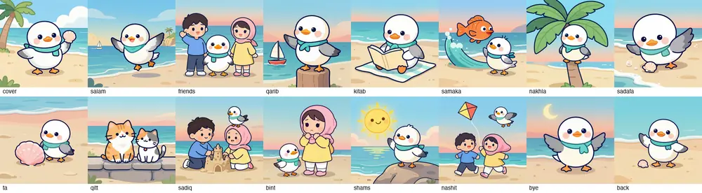
The book’s sheet (
book/build/noori-shell-sheet.png). Side by side, a changed face or a missing scarf jumps out. - Eye-check every picture The list the book and site pictures were checked against:
- Same face, hair colour and cut, same outfit; Noori’s teal scarf is there.
- Modest dress: no bare shins, shoulders or arms; headscarf covers all the hair and neck.
- No text, letters, numbers or logo-like squiggles anywhere (book covers, signs, shirts).
- No extra characters: a bear, a bunny, a sticker boy, a speech bubble with a face.
- Limbs and wings counted; no merged characters (seed 609 merged the she-cat into Noori).
- The picture matches the words (seed 606: Noori hugging the trunk, the text says he sits on top).
- No grown-ups (except the three word pictures), nothing from the content rules.
- Style matches: flat cartoon, not photo-like (story
s05-duskseed 1205 was rejected for a realistic pier). - Empty space is where the page needs it (sand for stickers, sky for a headline).
- Log it Put the winning seed on the
genline, a comment above it saying what the rejected seed did wrong, and a line in the script’sREVIEW LOG. Rejected tries go tohi/tries/<group>-<name>-<seed>.png(site) orbuild/<slug>-try/(book). - Make the web copies Pages never reference a master.
python3 assets/art/source/make-web.py # site: WebP, stickers cut out to transparent cd book && bash tools/web-art.sh noori-shell # book: 1024px copies of the 1536px masters
Sizes, seeds, names and budget
| What | Master (draw at) | Web copy | |
|---|---|---|---|
| Book page / story picture | 1536 × 1536 | 1024px (sips -Z 1024, web-art.sh) | the 1536px master itself, never a re-render. At ≥300 ppi it prints at most 5.1 in (13 cm) wide; the book’s pictures measured 374–592 ppi. |
Word picture / Noori sticker (pic/, noori/) | 1536 × 1536 on white | white cut to transparent, cropped, on a 640 × 640 canvas (people 480 × 640, standing on the floor line), transparent WebP | use the SVG on print pages |
Story slide background (story/) | 1536 × 1024 | 1200px wide WebP | – |
| Hero, wide (pacific, fanous) | 1536 × 768 | up to 1536 wide WebP | – |
| Hero, portrait (andalus, mihrab) | 1152 × 1536 | 900 wide WebP | – |
| Logo emblem | 1024 × 1024 (gen-logos.sh) | logos/img/cN.webp + transparent PNG | vector rebuild in logos/svg/ |
Sizes are multiples of 64. The seed is the picture: same prompt + seed + size gives the same picture again; changing the size or even a comma gives a different one.
Seed blocks
- Book
noori-shell: 600 + page order; each redraw adds 100 (7xx, 8xx). - Site
gen-art.sh:pic1000+,noori1100+,story1200+,site1300+; redraw +100. - Logos: concept × 100 + 1…4 (c2 = 201–204); a reworded redraw jumps to 251–254.
- The number tells the history:
friends 804means two redraws.
Folders and names
- Masters:
assets/art/hi/<group>/<name>.png(89 MB, never linked). - Web:
assets/art/<group>/<name>.webp; groupspic noori story site. - The file name is the API name:
KS.pic('cat-f')loadspic/cat-f.webp;KS.gull('wave')loadsnoori/wave.webp. - Lowercase, hyphens, English keys; story slides
s04-wall. - Book:
book/art-hi/images-<slug>/<page>.png→book/images-<slug>/.
Size budget
- Every site WebP ≤ 150 KB (
make-web.pysteps quality 86 → 44 until it fits). Real files: stickers 15–30 KB, story 25–65 KB, heroes 42–75 KB. - The book’s web copies are 1024px PNGs, about 1 MB each (17 MB for 16): fine for the book, too heavy for a lesson page. Use WebP for anything new.
loading="lazy",decoding="async", width and height on every<img>.
Ready prompt templates
Paste into the right script, replace the <…> parts, pick a seed from the next free block. Each one is a real line that worked.
KS.pic, transparent sticker)
# pic/apple: first draw (1018) rejected — a bunny face on the apple gen pic/<name> "a shiny red apple with one green leaf on its brown stem, $PSTYLE2" <seed> 1536 1536 "$NEG$NEG_OBJ"
gen <page> "a happy little orange fish jumping out of a curling teal wave, and $NOORI watching it with delight from the shore, $STYLE" <seed> # two children: positions + the slipping feature repeated gen <page> "on the left $SAMI with his short black curly hair uncovered, on the right $SALMA, <doing what>, full body view, $STYLE" <seed>
noori/<mood>)
gen noori/<mood> "$NOORI standing and thinking, he raises one wing and touches his chin with the wing tip, eyes looking up to the side, a curious little smile, his teal scarf clearly visible, full body front view, $PSTYLE2" <seed> 1536 1536 "$NEG$NEG_OBJ"
BSTYLE="$STYLE, no people, no animals, no birds, no characters" gen site/hero-<theme> "a wide panoramic San Diego beach at golden sunset, a big soft round sun low on the calm sea horizon in the centre, a tall palm tree at the far left edge and another at the far right edge, gentle teal waves and warm sand along the bottom, a large calm empty pale peach sky across the whole upper middle, $BSTYLE" <seed> 1536 768 "$NEG_BG"
SIZE=1536 gen <page> "close-up of $SHELL resting on smooth sand, and $NOORI peeking at it with big amazed eyes, lots of plain empty sand around, $STYLE" <seed> # then: bash tools/web-art.sh <slug> <page>; print uses the master, not the 1024px copy
Regeneration log: what went wrong and the words that fixed it
The horseshoe-arch lesson (logos)
“An emblem shaped like an Andalusian horseshoe arch” drew a literal horseshoe on all four seeds (201–204). The model takes the common meaning of a word. The fix was to describe the shape, not name it: “a Moorish arched window like the Alhambra: a tall pointed keyhole-shaped arch with a rounded top, standing on two slim columns and a flat base”, plus horseshoe, horse, magnet, lucky charm, U shape in NEG. Seed 253 won. The script says: do not “simplify” this back to “horseshoe arch”.
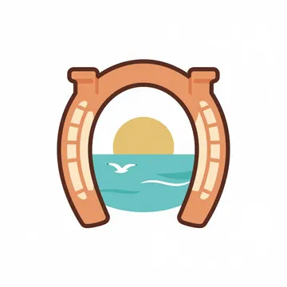
201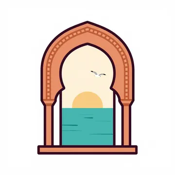
253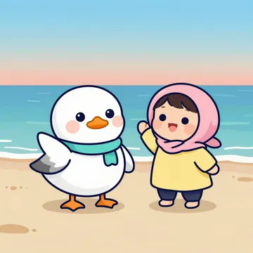
602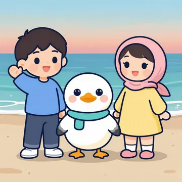
804friends. Both children in one clause → Sami dropped, bare shins. Fixed with left / middle / right.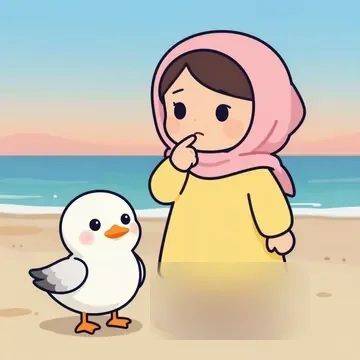
611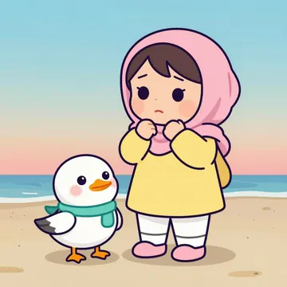
711bint. Noori lost his scarf; the scarf is repeated on that line.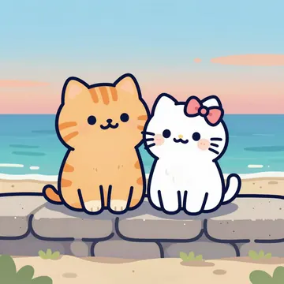
709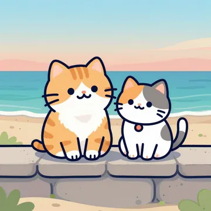
810qitt. 609 merged the she-cat into Noori; 709 was too close to a famous white cat with a bow. Now a calico, no bird on the page.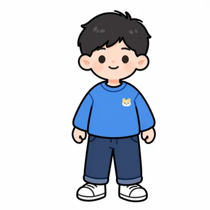
1000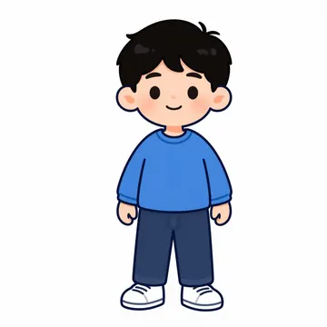
1100pic/boy. A little cat print on the shirt. “his blue t-shirt completely plain”.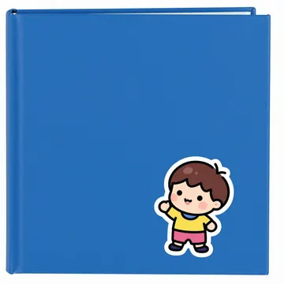
1009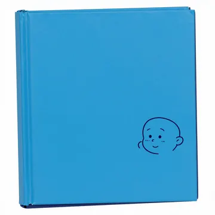
1109pic/book. The word “sticker” in the style added sticker characters. PSTYLE2 + NEG_OBJ.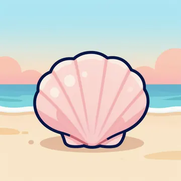
1021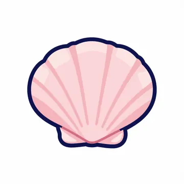
finalpic/shell. “San Diego beach palette” painted a beach behind a lone shell. Stickers drop it; SCN negatives.Also redrawn: nakhla 606 → 706 (spelled “sitting among the green leaves at the very top”), sadiq 610 → 710 (Sami got a headscarf), noori/fly 1102 (stood on the ground), noori/think 1103 (no wing on the chin), noori/sleep 1105 (eyes open), pic/sea 1020 (a bear in the sea), pic/door 1010 (a bear by the door), level-kg 1310 (a speech bubble with a face). The full reasons are comments in the two scripts.
Drawing in code (inline SVG)
الرَّسْمُ بِالْبَرْمَجَةِThe site started 100% inline SVG: no broken images, no emoji. The generated set sits on top of it with an artwork switch, and the SVG is always the fallback.
Use SVG for
- The logo in the top bar (
.logoalways gets the SVG gull), icons, ornaments, patterns. - Anything that animates by its parts: Noori’s eyes blink, wings flap, head tilts.
- Small sizes (under ~64px) and the theme-coloured UI.
- Print pages: pin them with
<html data-art-fixed data-art="svg">. - The fallback when a picture is missing.
Use generated art for
- Word pictures in cards and quizzes (
KS.pic). - Story scenes, book pages, heroes, level cards, word of the day.
- The Noori sticker set (
KS.gullin illustrated mode). - Anywhere a child should feel “this is a real picture book”.
Colour with CSS variables so themes swap
SVG parts carry a class, the class reads a token, every theme sets the token. Press a theme and watch the same drawing change.
.gull .g-scarf { fill: var(--gull-scarf); } /* pacific #11A5A9 · andalus #3B7A4C · mosaic #2450D8 */
.gull .g-line { stroke: var(--gull-line); stroke-width: 2.6; }
.pic .f-fem { fill: var(--fem); } /* clothes follow the theme's feminine colour */
.pic .f-hijab { fill: color-mix(in srgb, var(--fem) 40%, #FFFFFF); }The artwork switch and the fallback
رُسُومٌ بَسِيطَةٌ (simple, SVG) ↔ رُسُومٌ مُلَوَّنَةٌ (illustrated, the default). It lives in the theme picker; KS.art() reads it, KS.art('svg'|'ill') sets it and saves it in localStorage['nawras-art']. In illustrated mode KS.pic / KS.gull return an <img> whose onerror calls KS.artFallback(this) and swaps in the SVG, so a missing file never shows a broken image.
This <img> was given a broken file. onerror turned it into the SVG shell. The same happens when a lesson uses a word whose picture is not drawn yet (a missing file).
<span data-pic="cat-f"></span> <!-- auto-wired: KS.pic('cat-f') -->
<span data-gull="wave"></span> <!-- auto-wired: KS.gull('wave') -->
el.innerHTML = KS.pic('shell', { label: 'صَدَفَةٌ — a seashell' });
KS.gull('happy', { svg: true }) // always the SVG (logo, animation by parts)
<div data-art-slot><img class="ill-only" …><svg class="svg-only" …></div> <!-- static page art -->A new picture name needs three things: the SVG drawing in KS.pic (people, animals or OBJ), a label in LABELS ('shell': 'صَدَفَةٌ — a seashell'), and assets/art/pic/<name>.webp.
Typography with images
الْخَطُّ وَالصُّورَةُEvery children’s word is HTML text in Noto Naskh Arabic (--f-word, class .word) with full tashkeel, under or beside the picture, never inside it. Line height 1.9 leaves room for the harakat. Never letter-space Arabic.
هَذِهِ بِنْتٌ
This is a girl.هَذَا وَلَدٌ
This is a boy.Rules
- Picture above, word below, English caption smallest and last.
- هَذَا uses
--masc-text, هَذِهِ uses--fem-text, the ة uses--ta. - Wrap English inside Arabic in
<bdi>or.en(it isolates direction).
Colouring the ة without breaking the word: the ZWJ trick
Putting part of an Arabic word in its own <span> can cut the join between the letters (the letter before the span takes its end form). A zero-width joiner (‍, U+200D) on both sides of the split keeps them joined. KS.ta(word) does this for the trailing ة; [data-ta] elements are wired automatically. Test on an iPad: browsers differ in how they shape across a span.
Span, no ZWJ: the join can break.
مُعَلِّمَ<span class="ta">ةٌ</span>KS.ta(): ZWJ on both sides, joined.
مُعَلِّمَ‍<span class="ta">‍ةٌ</span>Minimum sizes
| Use | Size (from kids.css / the book) | Example |
|---|---|---|
| Word of the day | clamp(2.6rem, 8vw, 3.8rem), line-height 1.6 | شَمْسٌ |
| Quiz answer button | 1.6rem (1.45rem under 520px), button ≥ 64px tall | هَذِهِ |
| Picture-card word | 1.55rem, line-height 1.9 | قِطَّةٌ |
| Body text | 19px, line-height 1.75 | نَتَعَلَّمُ الْفُصْحَى بِفَرَحٍ |
English caption (.en) | .82em of its parent, --ink2 | Fusha for little hearts |
| Print (book, worksheets) | 17pt+ median text on every page (checked by check-print-text.py) | – |
| Anything tappable | --tap-min: 56px | – |
Animation rules
الْحَرَكَةُMotion has a job: feedback (you tapped, you answered), attention (look here), or reward (you did it). If it has no job, it goes. Every demo below runs the real class or function from the kit.
Reduced motion is on
Every animation and transition jumps to its end state (0.001 ms, one iteration), loops stop, confetti is skipped, scroll reveals and the tagline appear at once. The child still gets the star, the colour, the sound and the words: the reward never depends on motion.
Pop-in
.anim-pop · popIn · 420ms (--t-pop) · --ease-pop
Job: something new arrives: a star, a card, the result.
Wiggle
.anim-wiggle · wiggle ±6deg · .5s · ease-in-out · once
Job: attention: “tap me”. Once, not on a loop.
Hop (joy)
KS.cheer(el) · hop .5s ×2 --ease-pop + flapL/flapR .3s ×4 alternate
Job: reward after a right answer or انْتَهَيْتُ. Tapping Noori anywhere does it too.
Wrong = gentle shake
بِنْتٌ
.is-bad · shake 10px→4px · .4s · ease · once + KS.sfx('bad') (soft triangle tones)
Job: feedback. Then a hint, never “wrong!”, no red X, no lost stars; try again.
The ة flies in
.ta-fly · taFly .9s --ease-pop, then .ta-glow · glow 1.4s ×2
Job: teaches مُعَلِّمٌ + ة = مُعَلِّمَةٌ. The ة lands in the word.
Confetti
For finishing something: the quiz (40, or 80 for all right) and the writing pad (40).
KS.confetti(n=70) · fall 1.3–2.5s ease-out, delay ≤ .35s · removed after 3.2s · theme --c1…--c4
Job: big reward, rarely. Never on every answer.
Noori: blink, flap, moods
blink 5s ∞ (eyes shut at 96%) · fly: flapL/R .5s ∞ alternate · wave 1.1s ∞ · think: tilt 2.4s ∞ · cheer: hop .6s ×3
Job: Noori feels alive. Loops are slow and small; they stop under reduced motion.
Word-by-word tagline
نَتَعَلَّمُ الْفُصْحَى بِفَرَحٍ
[data-words] · wordIn .6s --ease-pop · stagger 220ms + 200ms
Job: the hero line arrives the way it is read. Split on spaces only, never inside a word; aria-label keeps the whole sentence.
Easing: why things “land”
Use: --ease-pop overshoots a little, for things that arrive or reward; --ease-out for moves and fades. All over --t-move 600ms here.
Durations and easings in kids.css
| Motion | Class / keyframes | Duration | Easing | Repeats | Job |
|---|---|---|---|---|---|
| Button press | .btn:active translateY(4px) | 140ms --t-tap | --ease-out | – | feedback |
| Card hover | .card--link −6px, −.6deg | .25s | --ease-pop | – | feedback |
| Pop-in / star on | popIn, pop | 420ms --t-pop | --ease-pop | 1 | reward |
| Wiggle | wiggle | .5s | ease-in-out | 1 | attention |
| Shake (wrong) | shake on .is-bad | .4s | ease | 1 | feedback |
| Hop (KS.cheer) | hop + flapL/R | .5s / .3s | --ease-pop / ease-in-out | 2 / 4 | reward |
| The ة flies in | taFly then glow | .9s, then 1.4s | --ease-pop / ease-in-out | 1, then 2 | teaching |
| Tagline | wordIn | .6s, +220ms per word | --ease-pop | 1 | attention |
| Scroll reveal | [data-reveal] → .is-in | .6s, +90ms per --i | --ease-out / --ease-pop | 1 | attention |
| Progress bar | .progress > i width | .5s | --ease-out | – | feedback |
| Speaking | pulse on .say.is-speaking | 1s | ease-in-out | while speaking | status |
| Noori alive | blink, wave, tilt, float | 5s, 1.1s, 2.4s, 4s | ease-in-out | ∞ (1 when reduced) | ambient |
| Confetti | fall | 1.3–2.5s | --ease-out | 1 | big reward |
Rules
- Motion has a job (feedback, attention, reward). Feedback finishes in under a second.
- Nothing flashes more than 3 times a second. The fastest repeat in the kit is a wing flap (.3s alternate) which moves, not flashes;
glowpulses every 1.4s. - Honour
prefers-reduced-motion. kids.css already does it globally; new keyframes need nothing extra. JS effects check it too (KS.confettireturns early). - No timers, countdowns or punishment. No “time’s up”, no losing stars, no lives. A wrong answer gets a gentle shake, a soft tone and a hint, then the right answer is shown.
- One thing moves at a time where the child is looking. Ambient loops (blink, float) stay small and slow.
- Animate
transformandopacityonly. Re-run a class withel.classList.remove(c); void el.offsetWidth; el.classList.add(c).
Sound & narration
الصَّوْتُ وَالْقِرَاءَةُThree kinds of sound: soft UI tones made in the browser, narration recorded once and shipped as MP3, and the browser’s own speech for tap-to-hear words.
| Voice | Engine | ID / where | Use |
|---|---|---|---|
| Fusha: Sarah | ElevenLabs eleven_v4 | EXAVITQu4vr4xnSDxMaL | the book, lessons, every Fusha line that ships |
| Egyptian: Hisham (clone) | ElevenLabs eleven_v4 | pusofH2Ro5Ny4RH6qBEO | the Egyptian toggle; name vocalised هِشام أبو العِلا |
| English: Hisham | local Fish S2-Pro (8-bit MLX) | ~/Work/Whisper-audio/bakeoff/narrate.py | the owners’ deck; no quota; non-commercial licence |
| Tap-to-hear words | browser speechSynthesis | KS.speak(text), rate .85, first ar-* voice | single words on cards; fails silently |
Listen: the approved samples
Fusha (Sarah) · audio/samples/ar/s2.mp3
Egyptian (Hisham) · audio/samples/eg/s2.mp3
Transcripts: audio/transcripts/sample-{ar,eg}.json
UI tones: KS.sfx()
Soft sine tones only, no music, no clips. Muted by the speaker button (saved as nawras-mute).
good 660 → 880 → 1175 Hz sine · bad 330 → 262 Hz triangle, quieter · pop 740 Hz, 90ms
Settings and tags
{ "title": "…", "language": "ar", "voice": "EXAVITQu4vr4xnSDxMaL", "model": "eleven_v4",
"settings": { "stability": 0.5, "similarity_boost": 0.8 },
"slides": [
{ "id": "s2", "title": "هذا وهذه",
"transcript": "[playfully] اُنظُروا مَعي… <break time=\"0.4s\" /> هذا وَلَدٌ، وهذهِ بِنتٌ. <break time=\"0.5s\" /> هذا قِطٌّ، وهذهِ قِطَّةٌ." } ] }eleven_v4, stability 0.5, similarity 0.8: the house recipe. v3/v4 ignore thestyledial, so delivery goes into tags.- Tags in English, in brackets, one per sentence:
[warmly][softly][gently][playfully][curious][excited][whispers]. Breaks<break time="0.4s" />give children time to look at the picture. - Add tags programmatically around the existing text, never retype a corrected line.
- Read in sequence:
generate.jssends the neighbouring slides asprevious_text/next_text.
Arabic rules for the voice
- Screen and voice differ. On screen: full tashkeel always. In a TTS script: selective tashkeel on ambiguous words (قِطَّة, يُصبِح); full tashkeel everywhere can confuse the model.
- Carrier sentences. A bare sound or a lone letter warbles; put it in a sentence: البقرةُ تقول: مُوو! A lone ة was read «تاء» in the book (caught by Whisper), so say التّاءُ المَربوطة.
- Never invent onomatopoeia; for real noises use the sound-effects endpoint, not a voice.
- Spell out numbers; no symbols, URLs or digits in a script.
- Arabic runs 30–50% longer than English; an Arabic clip shorter than its English twin is in the wrong folder.
- Fish S2-Pro softens emphatic letters in Arabic (ق→ك, ص→س, ط→ت, ض→ظ): English only for anything that ships; listen to every Egyptian clip if the local model is tried.
QA commands
node ~/Work/Elevenlabs-voice/generate.js --usage # quota before + after node ~/Work/Elevenlabs-voice/lint-transcript.js --pair source/x-ar.json source/x-eg.json node ~/Work/Elevenlabs-voice/generate.js source/x-ar.json audio/ar \ --voice EXAVITQu4vr4xnSDxMaL --model eleven_v4 --stability 0.5 --similarity 0.8 python3 ~/Work/Elevenlabs-voice/qa-audio.py source/x-ar.json audio/ar source/x-eg.json audio/eg cd ~/Work/Whisper-audio/bakeoff && uv run narrate.py deck <transcript.json> # local English, Whisper-checked
What qa-audio.py flags: mean_volume below −45 dB (healthy narration is −15 to −24 dB); seconds per spoken character above 1.6× the set’s median (Arabic narration runs 0.089–0.104 s/char). Also confirm the browser decodes each file (new Audio(url) fires loadedmetadata). The book’s 56 clips passed; ≈ 6.5k credits used.
Writing pad & print exercise art
لَوْحُ الْكِتَابَةِ وَالطِّبَاعَةُEvery lesson has a writing station: trace the ة, trace هَذَا / هَذِهِ, write a short sentence under a picture. On screen it is KS.writePad; in print it is dotted words on ruled lines.
<div data-writepad data-model="ة|هَذِهِ" data-lines="2"></div>
KS.writePad(el, { model: ['ة', 'هَذَا'], lines: 2, lineHeight: 140 }) // → { clear, undo, toPNG, redraw }On screen
- Finger, mouse or Apple Pencil (pressure sets the width);
touch-action: none; touches ignored for 1.5s after the pen (palm). - Baseline at 72% of the line, dotted mid-line at 42%; model word in Naskh at half the line height, dotted, from the right, with a green start dot.
- Three pens from tokens (
--ink,--masc-text,--fem-text), eraser, undo, clear, show/hide model, save PNG, 52px buttons. - انْتَهَيْتُ always praises: three stars,
sfx('good'), 40 confetti, Noori hops. No grading of handwriting, ever.
In print
- Ruled lines ≥ 12 mm per line for small hands:
.write-linesuses 14 mm; the book uses 26 mm with an 8 mm letter body. - Dotted tracing words (grey-blue
#7F8DB0, dash 2.5/3) with a green start dot (#2F9E44) and arrows, measured from the real glyphs. - White pages, thin lines, no tints behind writing: they must take pencil and crayon. Don’t laminate.
- Pictures on exercise pages are the SVG word pictures or simple outlines; a “draw it” box gets a caption line.
- One QR (≥ 25 mm, quiet zone, dark on white) per exercise page, linking to its writing-pad page.
Print preview · .trace-svg + .write-lines (14 mm)
Pre-ship checklist for a new lesson
قَبْلَ النَّشْرِTick through it before a lesson goes to the review step.